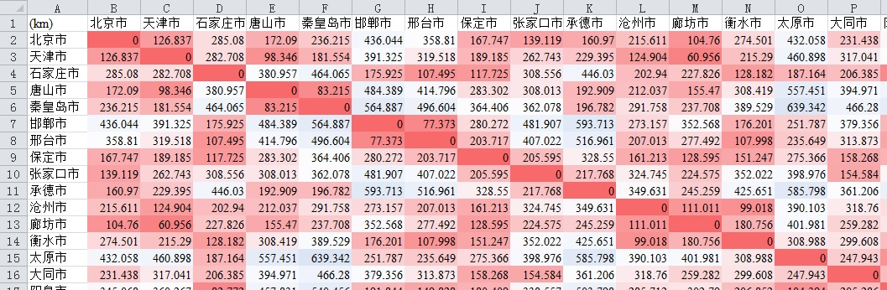
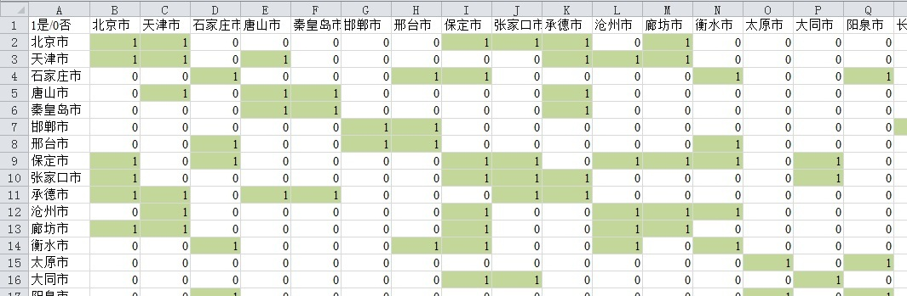
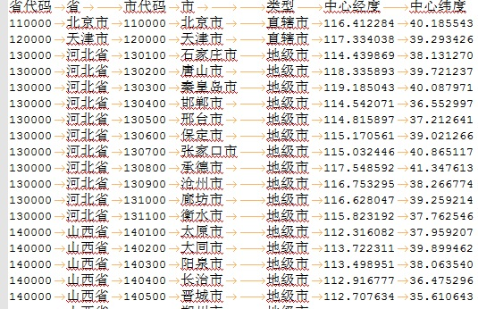

全国370城市空间权重矩阵及计算方法
Spatial weight matrix and adjacency matrix of cities in China
空间权重矩阵是一个反映个体在空间中相互依赖关系的矩阵，相近的事物关联关系越密切,权重影响越大，本文中计算的城市空间权重矩阵主要是基于地理距离的空间距离权重矩阵和基于共享空间要素的空间邻接矩阵。此外，不仅仅有从地理角度测算的狭义距离，还有广义距离，比如说经济距离、社会距离或者时间距离等等。
数据介绍
空间距离权重矩阵是通过城市中心点经纬度计算得到，其中，全国370个城市（包括地级市、直辖市、省直辖县、副省级市、自治州、盟、地区等）的中心点经纬度文本数据可以从文后数据下载部分下载。计算球面上两个经纬度点的方法可参考文后附录一。
空间邻接矩阵利用全国市级行政区划矢量数据，首先通过ArcGIS的Spatial Join [空间连接]工具计算获得与各个空间要素相邻接的要素，然后利用该结果生成邻接矩阵。
用于计算城市空间权重矩阵和空间邻接矩阵的原始地级市数据，现势性为2019年，数据来源于本站中国国家基础地理信息数据。
数据概况
空间范围：全国地级市
时间范围：2019年
数据类型：EXCEL等
数据预览
城市距离权重矩阵
城市空间邻接矩阵
全国370个城市及中心经纬度
数据下载
“有限共享”数据，不直接提供数据下载口令，需要先联系邮箱 gispie@163.com、QQ 2783343898或新浪微博私信@斩之浪，获取共享口令，流程详见本站数据共享说明
本数据持续更新，同时也可提供定制处理，有需要可联系！
全国370城市空间权重矩阵数据列表
附录说明一
计算球面上两个经纬度点的Python代码
1 2 3 4 5 6 7 8 9 10 11 12 13 14 15 16 17 18 19 | def calcDistance(lat1, lng1, lat2, lng2): ''' 已知两点经纬度, 求球面距离 :param lat1: p1纬度 :param lng1: p1经度 :param lat2: p2纬度 :param lng2: p2经度 :return: distance (m) ''' R = 6378137. # 地球平均半径 pi_180 = math.pi / 180. radLat1 = lat1 * pi_180 radLat2 = lat2 * pi_180 a = radLat1 - radLat2 b = lng1 * pi_180 - lng2 * pi_180 d = 2 * math.asin(math.sqrt(math.pow(math.sin(a / 2), 2) + math.cos(radLat1) * math.cos(radLat2) * math.pow(math.sin(b / 2), 2))) * R return d |
建议使用Google浏览器，IE内核浏览器可能不正常显示下载按钮等！
Fighting, GISer!
最新博文